Examples#
This section shows how to use PyChemkin utilities and reactor models to perform different types of simulations. Early examples demonstrate how to perform essential operations, such as loading and preprocessing the chemistry set. Later examples explain how to tackle more complex simulations, such as running an ignition delay parameter study. Thus, you should go through the examples in the order listed.
Note
When you use the Jupyter Notebook version of the example projects (*.ipynb), please
remember to close the project after you finish viewing and/or running the project. When the project
is open, it might hold on to your Ansys license. If you have too many Jupyter Notebook projects
active, you might run out of your Ansys licenses. Closing the Jupyter Notebook project will
release the license. If the Jupyter Notebook web interface is used to load the PyChemkin
example projects, you can navigate to the top menu bar and select File > Close and Shut Down Notebook
to close the project and release the license. If the VS Code is used, you can simply close the tab
associated with the example.
Chemistry#
PyChemkin examples to demonstrate basic operations for instantiating Chemistry Set from the gas-phase mechanism and the thermodynamic/transport data files.
The examples walk through the steps about how to pre-process the Chemistry Set, retrieve mechanism information and the species properties, as well as how to handle multiple Chemistry Sets in a Python Chemkin project.

Mixture#
Mixture is the “core” token in PyChemkin. It represents a gas-phase mixture by storing its pressure, temperature, and species composition. Stream is an extended “Class” of Mixture with the additional attribute of “mass/volumetric flow rate”. Mixture and Stream include utilities that can be used to evaluate the mixture properties (density, mixture enthalpy, mixture viscosity, …) and the reaction rates. There are also methods to manipulate the Mixture/Stream such as merging two mixtures adiabatically.
The examples demonstrate how to instantiate the Mixture/Stream objects, how to extract information and properties of a Mixture/Stream, and how to manipulate Mixture/Stream objects.
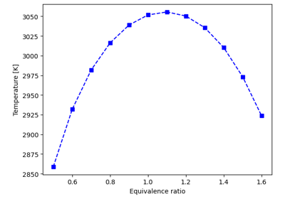
Estimate the adiabatic flame temperature of a gas mixture
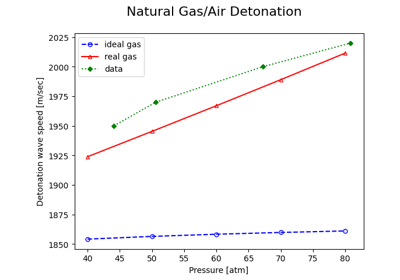
Calculate the detonation wave speed of a real-gas mixture
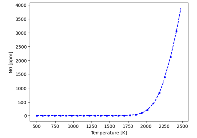
Estimate the steady-state NO emission level of a complete burned fuel-air mixture
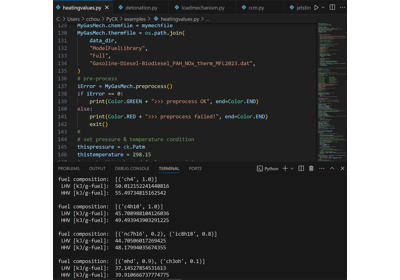
Calculate the heating values of fuel mixtures
Batch reactor#
The batch reactor is an idealized 0-D transient closed reactor model in which the gas inside the reactor is assumed to be homogeneous. When the pressure of the batch reactor is constrained, the reactor volume would vary to conserve the total gas mass. Likewise, the reactor pressure might change when the reactor volume is “given”. The gas temperature can be “given” by piecewise linear profile data or solved by the energy equation.
The examples consist of projects that utilize the batch reactor model to perform simulations of various complexities, from tracking the evolution of the mixture properties to the A-factor sensitivity analysis.
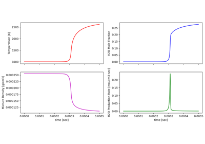
Simulate hydrogen combustion in a constant-pressure reactor
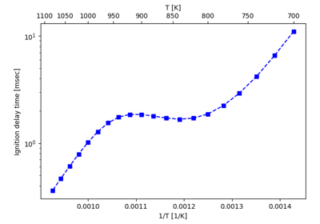
Predict the ignition delay time of a combustible mixture
0-D engine models#
PyChemkin offers two types of 0-D engine models: the Homogeneous Charged Compression Ignition (HCCI) engine model and the Spark Ignition (SI) engine model. These 0-D engine models simulate the combustion process (or the lack of, in case of a misfire) inside an engine cylinder between the Intake Valve Close (IVC) and the Exhaust Valve Open (EVO) when the cylinder is considered as a closed system. The Chemkin Theory manual has detailed descriptions of these 0-D engine models.
The examples show the steps of setting up simulations with different Chemkin engine models.
Perfectly stirred reactor#
The perfectly Stirred reactor (PSR) model is a 0-D steady-state reactor. This ideal reactor model assumes the gas mixture inside is uniform and the properties of the outlet stream are exactly the same as the gas properties inside the reactor. A PSR can have either its pressure or its volume “specified”, and the reactor temperature can either be solved from the energy equation or be “given” as an input parameter.
The examples will show the procedures of setting up single PSR simulations with different constraints and with multiple inlet streams.
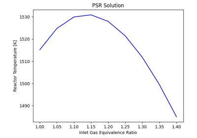
Set up a PSR parameter study for the inlet stream equivalence ratio
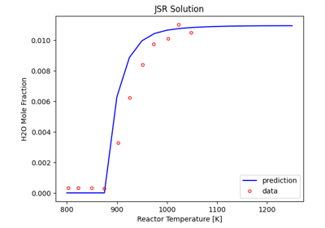
Run PSR calculations for mechanism validation
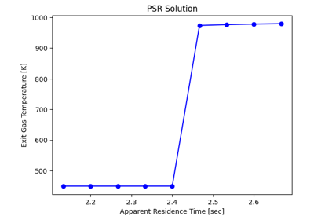
Determine the impact of residence time on combustion in a PSR
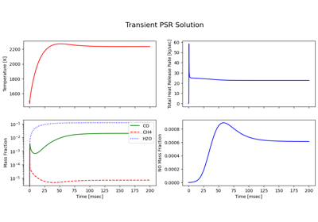
Transient simulation of methane-air ignition in a PSR
Plug-flow reactor#
Plug-Flow Reactor (PFR) model is an idealized 1-D steady-state flow reactor model with single inlet stream. The reactor pressure is assumed to be given, and the mass (flow rate) conservation is maintained by the velocity change. The gas temperature along the reactor can be either specified or solved by the energy equation.
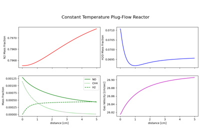
Simulate NO reduction in combustion exhaust
Shock tube reactor#
The shock tube reactor model is a 0-D transient reactor. This ideal reactor model is normally used to reproduce the shock tube experiments for chemical kinetics researches. The incident shock model predicts species profiles behind the incident shock front which can be used to compare against corresponding experimental data. Similarly, the reflected shock model complements the experiments for kinetics researches at the high temperature conditions behind a reflected shock front.
The examples will show the procedures of setting up an incident shock (with boundary layer correction) simulation and a Zeldovich-von Neumann-Deoring (ZND) analysis of a combustible gas mixture.
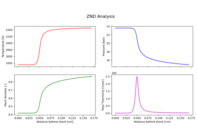
Perform ZND analysis of a combustible hydrogen mixture
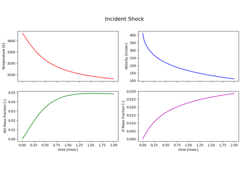
Nitric oxide formation in air heated by an incident shock wave
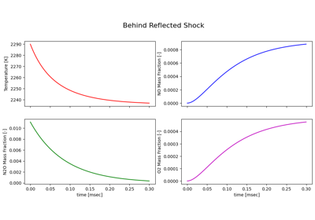
Dissociation of nitrous oxide behind a reflected shock wave
PSR network#
PyChemkin can be used to create an Equivalence Reactor Network (ERN) as a reduced-order (in geometry) model for complex combustion applications such as gas turbine combustor. Each reactor in the network represents a sub-region (zone) in the actual equipment. Normally these zones are created according to specific criteria such as temperature, equivalence ratio, or location; and the gas flow (mean, turbulent, and diffusive) between the zones becomes the internal streams between the reactors.
There are several ways to build an ERN in PyChemkin. The first method is to create and solve the reactors one-by-one starting from the most upstream (first) reactor. Adjust/manipulate the external and outlet streams from connected reactors (that is, solutions from the reactors) using the Mixture/Stream utilities and apply the desired stream as the inlet for the downstream reactors. The second method takes advantage of the hybridreactornetwork “model” of PyChemkin. Simply defined the reactors with the associated external inlets and add the reactors to the hybridreactornetwork. If there are recycling streams from the downstream reactor to the upstream ones, the hybridreactornetwork will solve the entire ERN iteratively. In this case, a tear point must be explicitly specified. The last method, the coupled method, is to create the network and its connectivity first, and the entire ERN will be solved in a coupled manner. This method is the default method in Chemkin GUI and is available as the PSRCluster “model” in PyChemkin.
- Chemkin ERN has a few limitations:
The first reactor of the reactor network must have at least one external inlet.
when using the coupled model, the entire reactor network can have only one outlet to the surroundings, and the outlet must be attached to the last reactor in the network.
PSR is the only reactor model allowed in the PSRCluster and the hybridreactornetwork reactor networks.
The PSRChain_xxx examples show the two methods to build and run a series of linked PSRs (no stream recycling) can be modeled in PyChemkin. The PSRnetwork example goes over the steps of creating and running an ERN with recycling streams by using the hybridreactornetwork method. The PSRnetwork_coupled example solves the same ERN as the PSRnetwork example but utilizes the coupled method. Because the sole outlet from the coupled ERN must be attached to the last reactor, the order of the downstream zones is different from the PSRnetwork example.
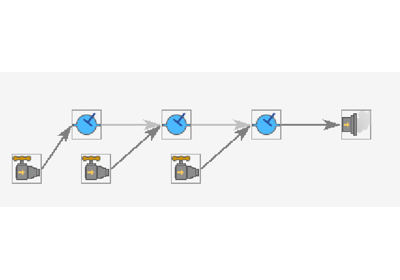
Use a chain of individual reactors to model a gas combustor

Use a chain reactor network to model a gas combustor
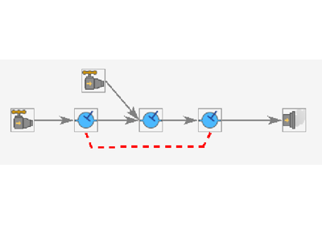
A simple reactor network with heat exchange


Simulate a combustor using an equivalent reactor network with stream recycling
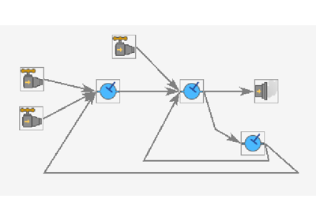
Simulate a combustor using a coupled equivalent reactor network with stream recycling
Premixed flame models#
The Premixed Flame model is a 1-D steady-state application, and it contains two sub-models: “flame speed calculator” (or the freely propagating flame model) and “flat flame” model. The flame speed calculator is commonly used to calculate the laminar flame speed of a premixed fuel-oxidizer mixture. The predicted/computed flame speeds can be used to validate a combustion mechanism or can serve as a prre-processor to construct a “flame speed table” or a “combustion progress table” for other applications. The flat flame burner-stablized model is primarily used to study the flame chemistry in conjunction with the flat flame experiments.
The examples show different ways to perform the “premixed flame” calculations.
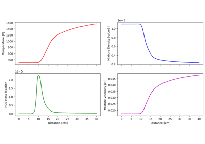
Compute the laminar flame speed of diluted hydrogen at low pressure
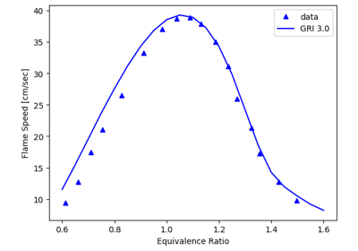
Construct atmospheric methane-air flame speed versus equivalence ratio table
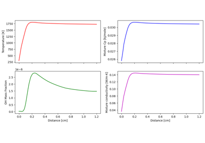
Simulate a burner stabilized premixed flame
Opposed-flow flame model#
The opposed-flow Flame model is a 1-D steady-state application to study the structure of stretched flames in the opposed-flow configuration. It can also be used to generate a “flamelet table” for CFD simulations. See the Chemkin Theory manual for additional information about this feature.
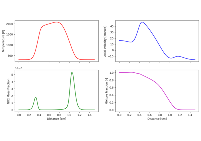
Study flame interactions in an opposed-flow flame configuration
Surface chemistry#
The examples in this section demonstrate how surface chemistry can be included in a Chemistry Set and applied to simulate chemical vapor deposition (CVD) and catalytic combustion processes in PyChemkin.
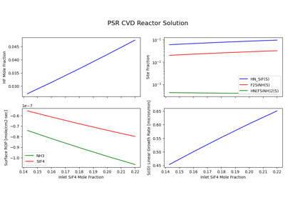
Simulating the chemical vapor deposition (CVD) process
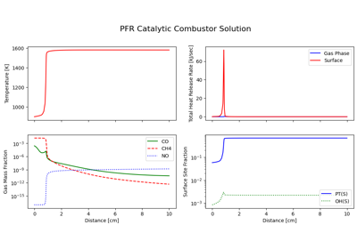
Simulating CH4 catalytic Combustion process
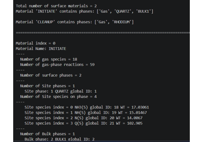
Processing a surface mechanism with multiple materials
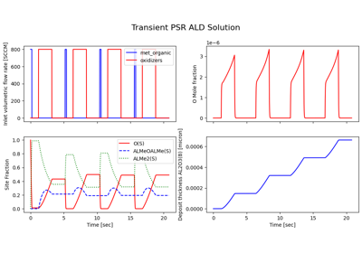
Modeling atomic layer deposition process in a transient PSR
Multiprocessing parameter study#
Chemkin application by itself does not support parallel computing, however, in the context of parameter study, each case can run on its own CPU core to make better use of any available computing power. The examples in this section describe the process of applying Python multi-threading and multi-processing packages to PyChemkin parameter study to improve the overall simulation performance.

Setting up a multi-process laminar flame speed parameter study
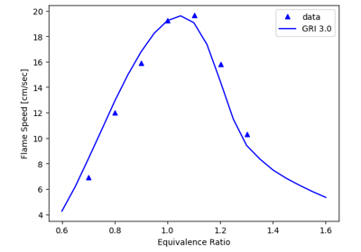
Setting up a multi-thread laminar flame speed parameter study
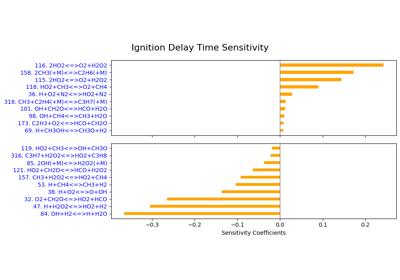
Perform brute-force sensitivity analysis on multiple processors
Advanced Applications#
Examples in this section are to showcase the use of Pychemkin in more complicated applications. You can make improvements to a Pychemkin reactor model by adding new physical processes. Or, you can have Pychemkin interact with other Python applications to address complex problems.
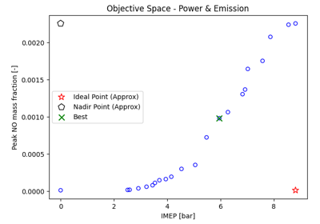
Find the optimal operating parameters for a given SI engine
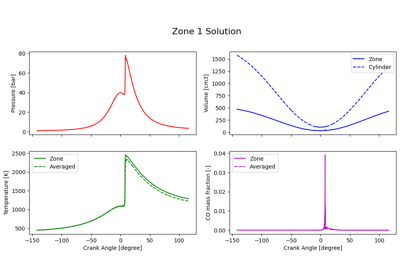
A pseudo stochastic scheme to simulate a stratified-charged compression-ignition engine
Post-processing#
PyChemkin has post-process utilities that can import the XML solution data file generated by selected Chemkin 1-D and 1.5-D reactor models. The examples in this section demonstrate how to use these utilities to import, visualize, and analyze the solution data from the (1-D steady-state) flame model, the (transient 0-D) multi-zone SI engine model, and the (pseudo 2-D) shear-layer channel flow reactor models.
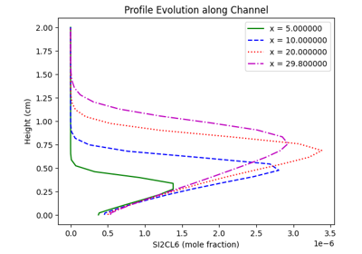
Post-process Chemkin shear-layer flow solution